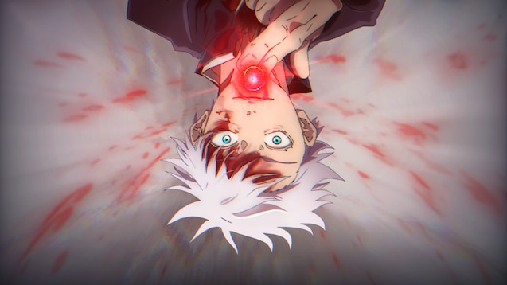
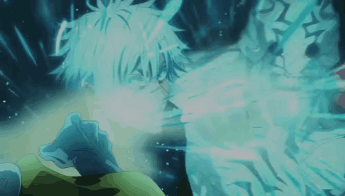
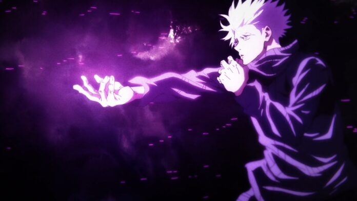

Historia
Satoro nasceu no clan Gojo, e nasceu com a tecnicados 6 olhos, fazendo ele ser o feiticeiro mais forte da era atual assim que nasceu
Tecnica
A tecnicado Satoru é os 6 olhos que pode ser resulmida em 4 tecnicas
Vermeho
O Vermeho é a energia dos 6 olhos reversa, tudo que chega perto do Vermelho é replido. O Vermeho é reprentado pelos numeros positivos
Azul
O Azul é a energia dos 6 olhos em sua forma normal, tudo que chega perto do Azul é atraido para perto dele. O Azul é representado pelos numeros negativos

Mugen
O Mugen é o um espaço em volta de Satoru Gojo no qual qualquer obijeto que chegue perto e demonstre perigo tenha sua velocidade dividida por dois sem parar, fazendo assim que nunca toque no Satoru
porem da para usar a amplificação de dominio para conseguir tocar nele, mas se a amplificaçãode dominio não for bem treinada provavelmente quem esta tentando acertar Satoru tera muita dificuldade
Roxo
O Roxo é a mistura da tecnica do Vermeho e do Azul. Ele atrai e afasta qualquer objeto ao mesmo tempo fazendo objeto ser evaporado
Expansão de Dominio: Vazio Ilimitado
O Vazio Ilimitado faz com que todos dentro da expansão recebam informação sobre absolutamente tudo, fazendo que tenha uma morte cerbral pela quantidade de informação
">